Selvstendighet
Jeg starter prosjekter på eget initiativ — også på fritiden — og fullfører dem helt ut til publisert produkt.
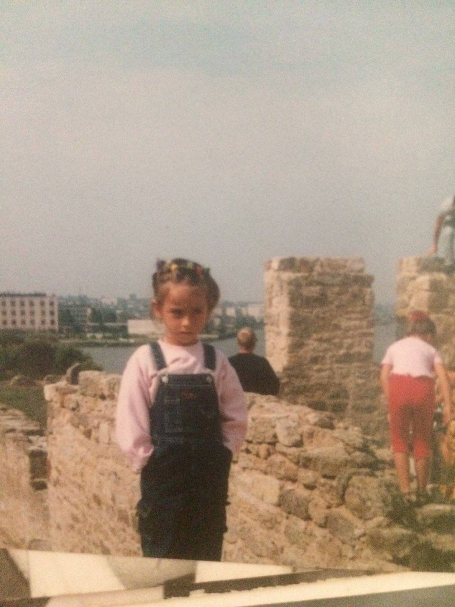
Egenvurdering · VG1 IM
En reise fra et nysgjerrig barn med blyant og papir til en utvikler og designer som bygger ekte, interaktive produkter. Dette er min dokumentasjon for Konseptutvikling og Programmering VG1 og YFF VG1.
«Jeg drømmer maleriene mine, og så maler jeg drømmen min.» — Vincent van Gogh
Jeg heter Yuliia. Jeg elsker Van Gogh, stjernehimmel, kaffe og kode som gjør noe vakkert eller nyttig. Helt siden jeg var liten har jeg tegnet, bygget og fundert på hvordan ting kan se ut og fungere.
I dag bygger jeg nettsider, iOS-apper, planleggere og interaktive konsepter. Jeg jobber både i Figma og i kode — og jeg liker når de to verdenene møtes.
«Det er ikke det jeg vet som driver meg — det er det jeg ennå ikke har laget.»
— min egen arbeidsfilosofiKarakter 6 betyr fremragende kompetanse. Jeg mener jeg viser dette gjennom fire ting:
Jeg starter prosjekter på eget initiativ — også på fritiden — og fullfører dem helt ut til publisert produkt.
Web, iOS, planleggere, dataspill, naturfagsprosjekt, datamodell — jeg bruker det jeg lærer på tvers av fag.
Jeg bruker ikke bare verktøy — jeg forstår hvorfor. Brukeropplevelse, tilgjengelighet, ren kode, struktur.
Jeg evaluerer arbeidet mitt, tar imot tilbakemeldinger og forbedrer videre. Hver iterasjon er bevisst.
Mitt store mål
Jeg vil studere ved NTNU i Trondheim — Norges fremste tekniske universitet. For å komme inn trenger jeg sterke karakterer. Karakter 6 i Konseptutvikling og Programmering er ikke en bonus — det er en forutsetning for drømmen min.
Derfor jobber jeg ikke for å «bestå». Jeg jobber for å bli god nok. Hvert prosjekt på denne siden er et lite skritt mot Gløshaugen.
søknad.ntnu.no
VG1 IM · Charlottenlund VGS
Status: Arbeider
Konkret, målbart, tellbart.
Fra «hva er en HTML-tag» til publiserte produkter på eget domene.
Første møte med HTML, CSS og Figma. Skisser på papir, første statiske sider.
Første ekte konseptside. Flerspråklig, responsivt, med ekte merkevareidentitet.
ER-diagram, entiteter, relasjoner. Grunnlaget for å forstå bakkant.
Radon-prosjektet. Lærte å bruke kode for å formidle pensum visuelt. Publisert på GitHub Pages.
Lansert på moonlitconfessions.me. Custom animasjoner, lyd, atmosfære.
Steg utenfor web. SwiftUI, egne SVG-er, et mini-spill med flere endinger.
Egen Van Gogh-inspirert planlegger. Og denne presentasjonen — laget for hånd for å vise alt sammen.
Videre med fordypning i programmering, design og teknologi. Parallelt tar jeg fag som privatist for å holde tempoet mot NTNU.
VG2 fullført + privatistfag tatt parallelt = klar for opptak til NTNU i Trondheim.
Under er kompetansemålene fra læreplanen i Konseptutvikling og Programmering VG1, og hvilke av mine prosjekter som dokumenterer hvert mål.
Jeg bruker alltid en strukturert kreativ prosess: idé → moodboard → skisser på papir → Figma-wireframe → prototype → kode. Pine Brass Coffee gikk gjennom tre iterasjoner i Figma — farge, typografi og layout ble testet mot hverandre før én piksel kode ble skrevet. MoonlitConfessions startet med et konseptkart: «hva føles det som å skrives brev midt på natten?» — og alt fra lyddesign til animasjoner ble valgt bevisst ut fra dette.
Denne presentasjonssiden er selv et resultat av kreativ metodikk: Van Gogh-palette som utgangspunkt, visuell hierarki planlagt i skisser, og iterativ forbedring basert på tilbakemeldinger.
📁 Bevis: Pine Brass Coffee · MoonlitConfessions · Figma-fil · denne siden
Starry Planner ble presentert for medelever i klassen som målgruppe — jeg samlet tilbakemeldinger og la til pomodoro-funksjonen etter at flere savnet den. PurrfectFocus ble designet spesifikt for iOS-brukere med fokusutfordringer — personas, brukerhistorier og App Store-retningslinjer var med fra start.
Pine Brass Coffee ble presentert som om det var en reell kunde — med merkevare, målgruppe (urbane kaffedrikere, 25–40 år) og flerspråklig støtte for internasjonale gjester.
📁 Bevis: Starry Planner · PurrfectFocus · Pine Brass Coffee · tilbakemeldinger
Alle prosjektene mine bygger på reelle brukerbehov og universell utforming:
📁 Bevis: Pine Brass Coffee · denne siden · Lighthouse Accessibility 100
Web (Pine Brass Coffee, MoonlitConfessions, Naturfag), Next.js-app (Starry Planner), iOS-app (PurrfectFocus), datamodell og Figma-prototype. Samme idé, ulike flater.
📁 Bevis: alle prosjekter
Vanilla JS i Pine Brass Coffee og Naturfag, React/Next.js i Starry Planner, Swift/SwiftUI i PurrfectFocus, canvas-animasjoner i MoonlitConfessions og denne siden du leser nå.
📁 Bevis: alle prosjekter + denne siden
Figma for skisser/prototyper, VS Code/Xcode for utvikling, Git/GitHub for versjonskontroll og publisering, Netlify/Vercel/GitHub Pages for deploy.
📁 Bevis: Figma-fil · GitHub-repoer
Jeg dokumenterer arbeidet mitt på tre nivåer:
Jeg ba om tilbakemeldinger på Starry Planner fra medelever og la til pomodoro-timer basert på det. Tilbakemeldingene fra klassen på Pine Brass Coffee førte til bedre kontrast og større knapper på mobil. Se Tilbakemeldinger-seksjonen for sitater.
📁 Bevis: README-filer · Git-historikk · tilbakemeldingsseksjon
Jeg har tegnet et komplett ER-diagram for et fiktivt bokingsystem (f.eks. for en kafé som Pine Brass Coffee). Modellen inneholder entiteter som Kunde, Bestilling, Produkt og Ansatt, med korrekte relasjoner og kardinaliteter (1:N, M:N).
Å forstå datamodellering betyr at jeg vet hvordan backend og databaser fungerer — ikke bare frontenden. Det er fundamentet for å bli en fullstack-utvikler.
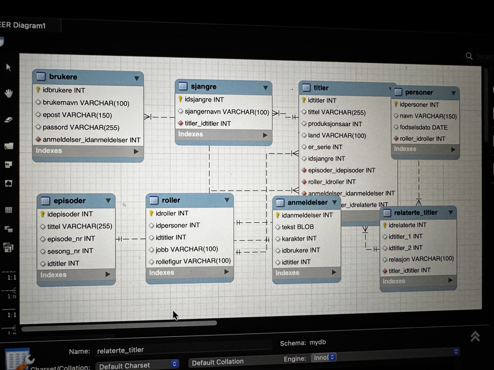
📁 Bevis: datamodell.jpeg · ER-diagram med entiteter og relasjoner
Jeg bruker Claude og ChatGPT som sparringspartnere — for å forstå feilmeldinger, diskutere arkitektur og få forklaringer på konsepter. Jeg skriver aldri kode jeg ikke forstår. Hvis AI foreslår noe, leser jeg det linje for linje og forstår hvorfor det fungerer.
Alle bilder er egne (barnefoto, kattebilde). Fonter er fra Google Fonts (åpen lisens). Ikoner er egne SVG-er. Bakgrunnsanimasjonen er skrevet fra scratch — inspirert av Van Gogh, ikke kopiert.
Opphavsrett: alle eksterne prosjektlenker peker til offentlige sider jeg selv eier eller har tillatelse til å bruke.
📁 Bevis: README-filer · Git commits (min kode, mine ord) · denne siden (laget for hånd)
Klikk på et prosjekt for å åpne det live.
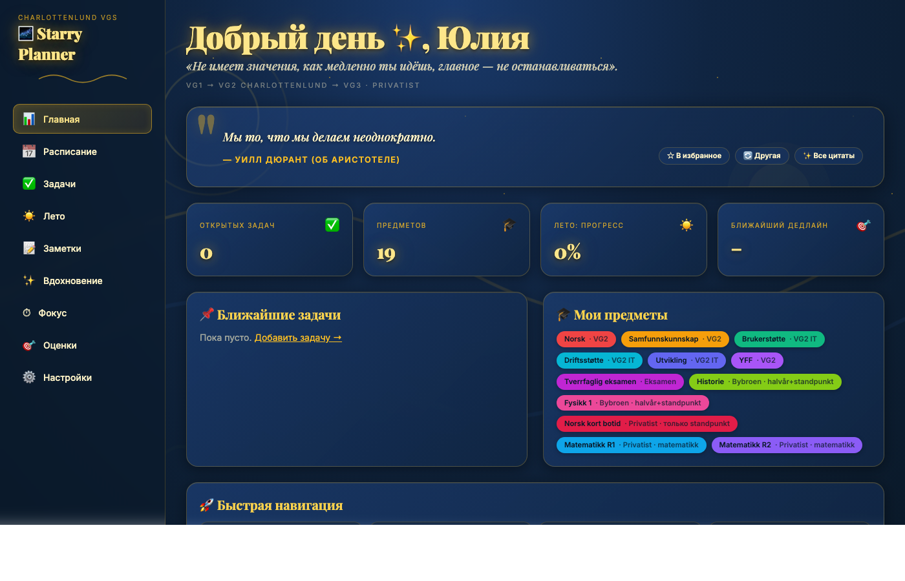
Personlig planlegger i Van Gogh-stil. Pomodoro, ukeplan, mål, sitater, 5 temaer. Next.js 14 + Tailwind + localStorage.
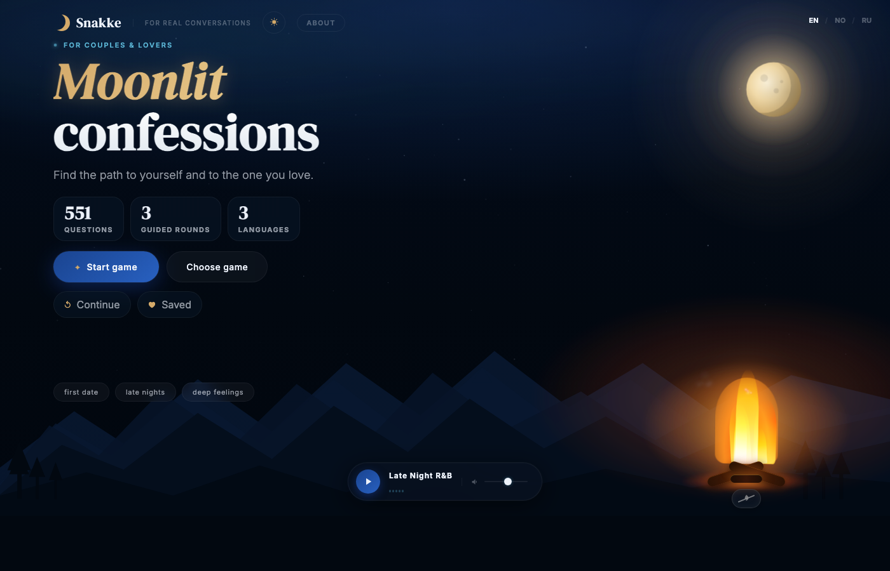
Atmosfærisk nettside om natt og ærlighet. Egen bakgrunnsmusikk, animasjoner, custom CSS.
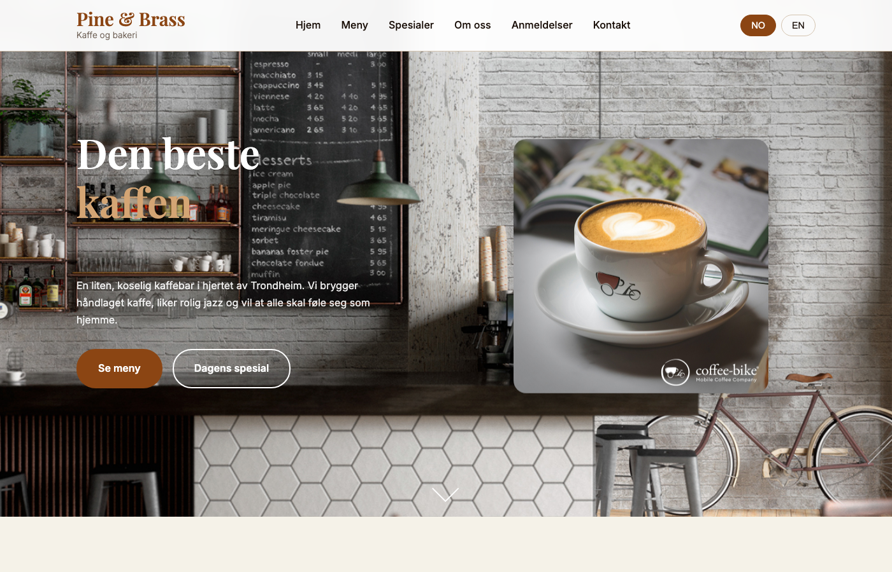
Konseptside for en fiktiv kaffebar. Flerspråklig (translations.js), responsivt design, taktil estetikk.
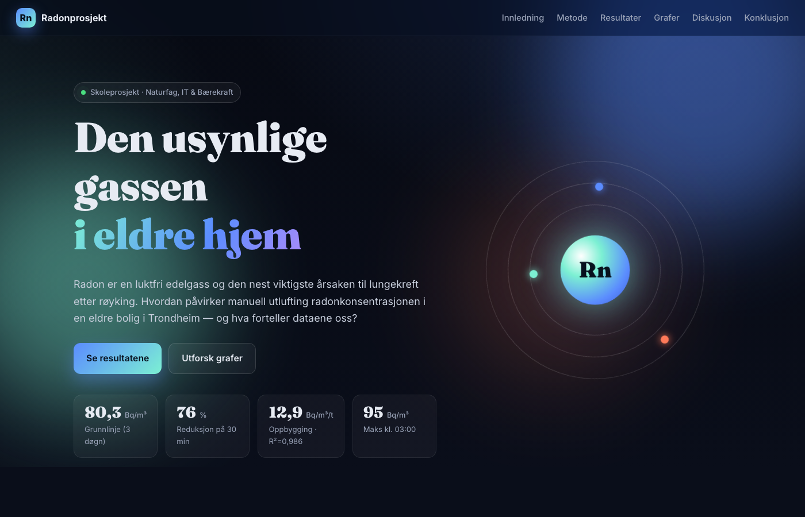
Interaktivt skoleprosjekt for naturfag — bruker det jeg lærte i programmering for å formidle pensum visuelt.
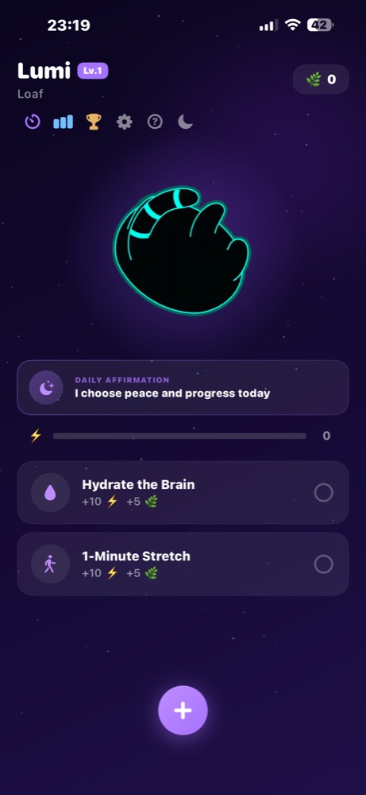
Komplett iOS-app: pomodoro, vaner, statistikk og en egen butikk. Designet og kodet fra bunnen av i Swift + SwiftUI.
Designprosess, skisser, prototype og iterasjoner — bevis på arbeidsmetoden bak ferdig produkt.
ER-diagram: entiteter, relasjoner, kardinaliteter. Grunnlaget for forståelse av databaser og bakkant.
I YFF har jeg jobbet bevisst med å koble skolefag til reell yrkesutøvelse. Mine fritidsprosjekter (MoonlitConfessions med eget domene, Starry Planner, PurrfectFocus) viser at jeg ikke bare gjør oppgaver — jeg jobber som utviklere og designere gjør i bransjen:
Dette er det yrkesfaglig fordypning skal være: bro mellom skole og yrke.
«Store ting er ikke gjort av impuls, men av en serie små ting brakt sammen.»
— Vincent van Gogh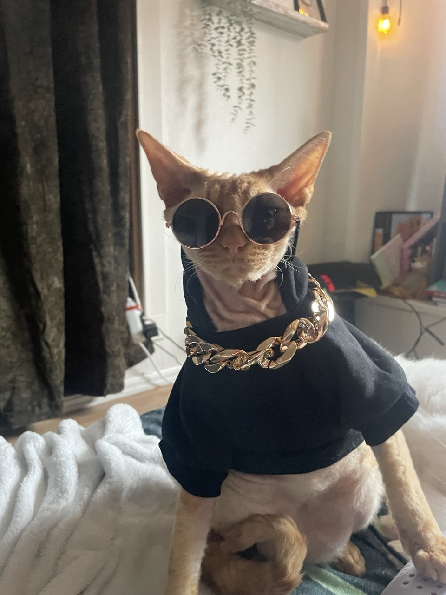
BOSS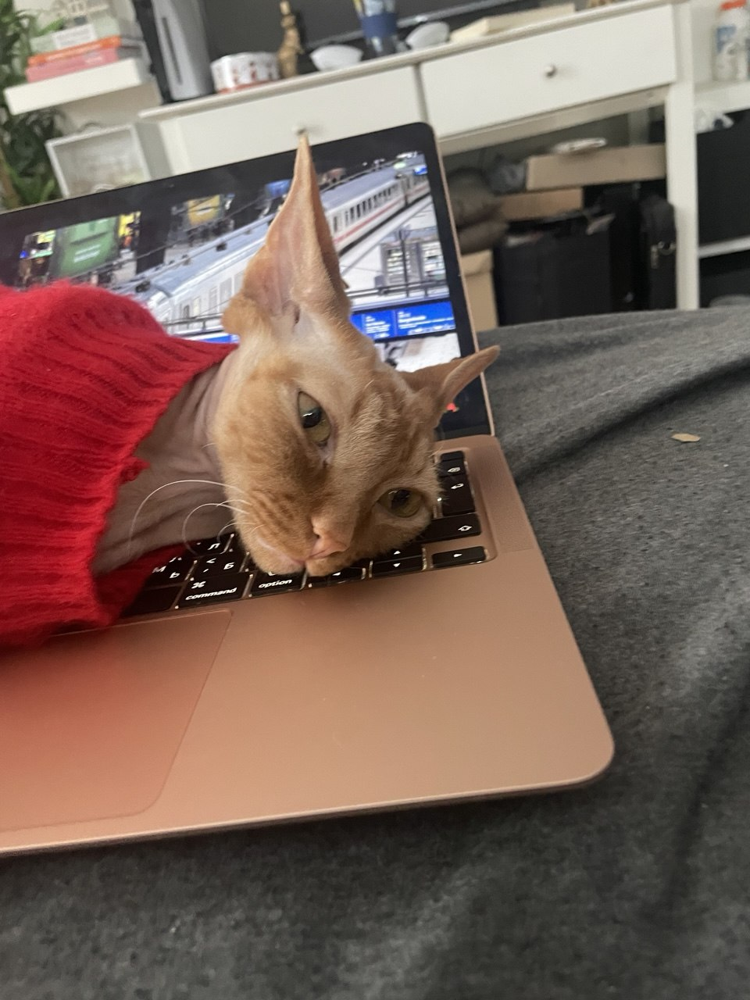
CTODen ekte motivasjonen
Dette er Grisha — Devon Rex, deltids gangster, deltids utvikler-assistent. Han hjelper meg med koden (ved å sitte oppå tastaturet) og krever god mat som lønn.
Han har dyre vaner: solbriller, gullkjede, og bare den fineste kattematen. Derfor trenger jeg karakter 6 → god utdanning → god jobb → masse premium-kibble til ham. Det er den ekte ligningen.
«En karakter er ikke bare et tall. Det er en lovnad til en katt som stoler på meg.»
Stemmer fra klassen, lærere og brukere som har testet prosjektene mine. (Sitater er omformulert med samtykke fra avsenderne.)
«Pine & Brass føles som en ekte kafé jeg kunne tenke meg å besøke. Detaljene gjør hele forskjellen.»
«Imponerende at hun bygger så mye på fritiden. Det viser ekte interesse for faget.»
«Starry Planner er det første jeg åpner om morgenen. Pomodoro + sitater = perfekt fokus.»
Karakter 6 betyr ikke bare «det funker» — det betyr at det er målbart godt. Denne siden er testet med profesjonelle verktøy:
Lazy-loading, content-visibility, optimaliserte bilder, paused canvas når faner er skjult.
Skip-link, ARIA, semantisk HTML, prefers-reduced-motion, full tastaturnavigasjon, WCAG AA-kontrast.
HTTPS-klar, ingen console-feil, moderne API-er, sikre lenker (rel=noopener).
Meta description, Open Graph, JSON-LD structured data, canonical lang, semantisk markup.
Service worker + manifest. Fungerer offline. Kan «installeres» som app på iOS, Android, Mac.
HTML & CSS validert. Null feil. Semantisk korrekt markup.
Test selv: kjør Lighthouse i DevTools, eller besøk validator.w3.org.
At jeg ikke stoppet ved «innleveringen er ferdig». MoonlitConfessions, Starry Planner og PurrfectFocus ble laget fordi jeg ville, ikke fordi jeg måtte.
Å planlegge før jeg koder. Å skrive ren, lesbar kode. Å bry meg om brukeren. At det er forskjell på «det funker» og «det er bra».
Dypere i fullstack — egne backend-er med ekte databaser bygd på datamodeller jeg tegner selv. Mer brukerstudier, mindre antakelser.
Karakter 6 er ikke et mål i seg selv — det er en bekreftelse på at innsatsen og kvaliteten er der. Jeg mener materialet over viser begge deler.
— Yuliia Yermolova · VG1 IM
Bygget i Xcode med SwiftUI · Egen design · Kjører på ekte iPhone
En fokus- og vane-app der pomodoro-økter og daglige vaner belønner deg med kattepleie, prestasjoner og en egen butikk. Designet, programmert og testet fra bunnen av — onboarding, mørk/lys modus, statistikk og animasjoner.
▶︎ Live demo (2 min) — tatt opp på min egen iPhone
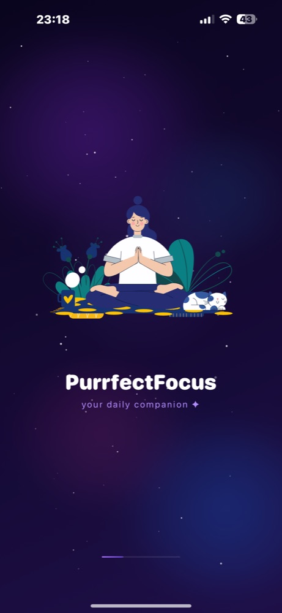
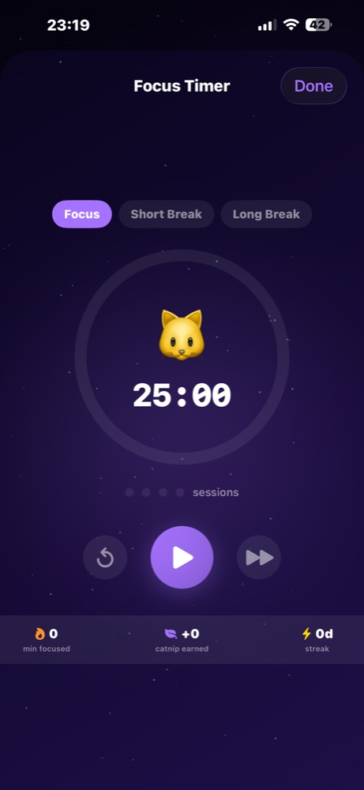
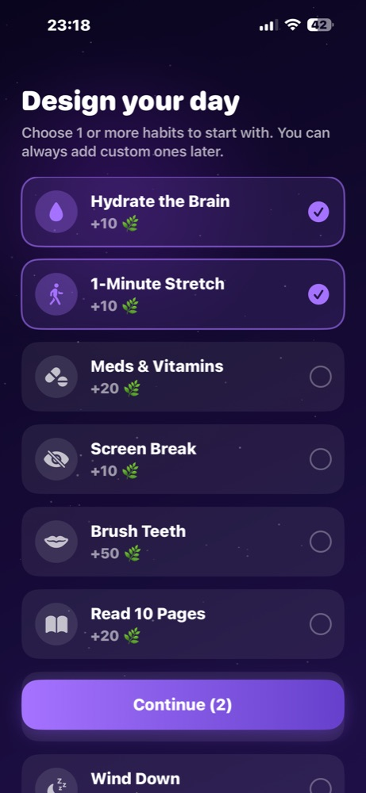
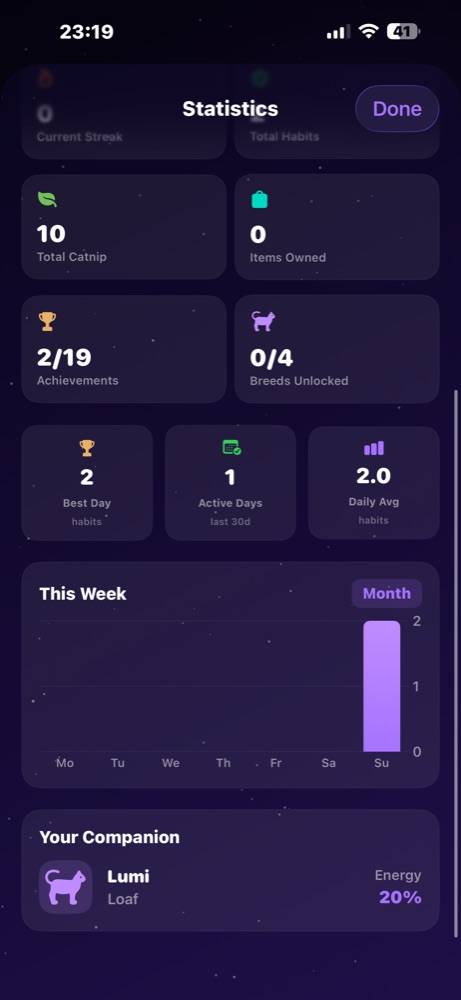
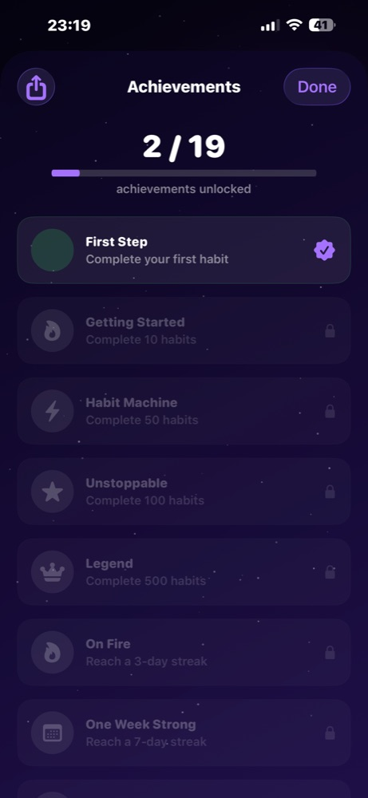
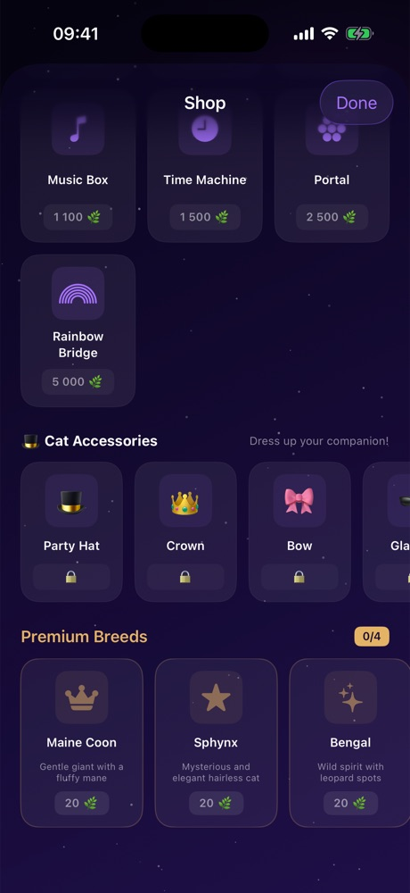
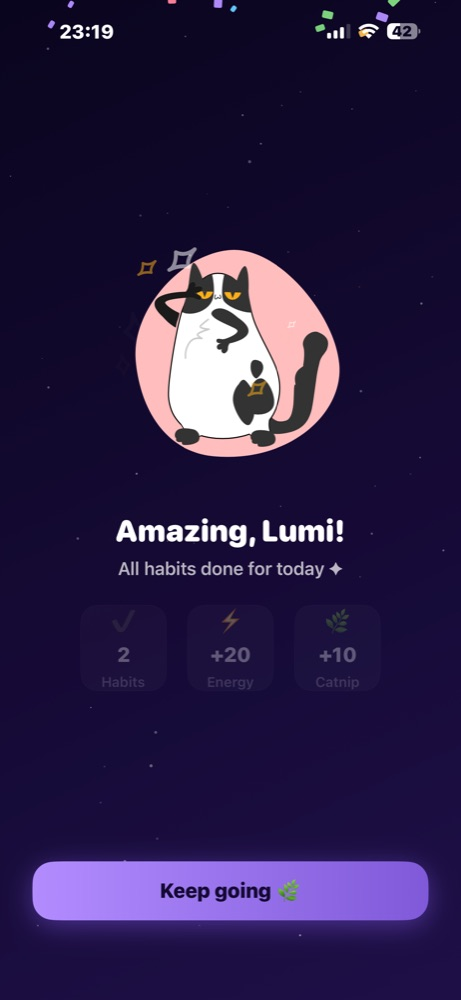
Dette er det mest avanserte prosjektet mitt — en komplett, fungerende iOS-app med ekte appstruktur, ikke bare en skisse. Kan demonstreres live på iPhone.